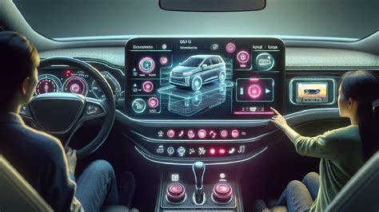

Some of the most common infotainment applications include not just the obvious entertainment, but also provides navigation, hands-free communication, smartphone integration, voice control, displaying vehicle information, internet connectivity, and electric-vehicle functions.

Infotainment systems have become increasingly sophisticated, incorporating touchscreens, voice recognition, and smartphone integration. Today, many vehicles come equipped with advanced infotainment systems that offer a wide range of features, including navigation, entertainment, and connectivity options.Here are some major automotive manufacturers, their branded infotainment systems, and the underlying technology platforms.
| Manufacturer | Infotainment System | Technology / Platform |
|---|---|---|
| Ford | SYNC 4 / Ford Digital Experience | QNX and Android-based technologies, depending on system |
| Lincoln | Lincoln Digital Experience | Google and Android technologies |
| General Motors | GM Infotainment | Android Automotive OS |
| Chevrolet | Chevrolet Infotainment | Android Automotive OS on equipped models |
| GMC | GMC Infotainment | Android Automotive OS on equipped models |
| Cadillac | Cadillac Infotainment | Android Automotive OS on equipped models |
| Buick | Buick Infotainment | Android Automotive OS on equipped models |
| Chrysler | Uconnect 5 | Android-based platform |
| Dodge | Uconnect 5 | Android-based platform |
| Jeep | Uconnect 5 | Android-based platform |
| Ram | Uconnect 5 | Android-based platform |
| Toyota | Toyota Audio Multimedia | Toyota-developed platform |
| Lexus | Lexus Interface | Toyota-developed platform |
| Honda | Honda Display Audio / Google Built-in | Android Automotive OS on select models |
| Acura | Acura Infotainment / Google Built-in | Android Automotive OS on select models |
| Nissan | NissanConnect | Android Automotive OS on select models |
| Infiniti | Infiniti InTouch | Nissan-developed platforms |
| Hyundai | ccNC / Display Audio | Hyundai-developed platform |
| Kia | ccNC / Connected Car Navigation Cockpit | Hyundai Motor Group platform |
| Genesis | Genesis Connected Car Navigation Cockpit | Hyundai Motor Group platform |
| Mazda | Mazda Connect | Mazda-developed platform |
| Subaru | Subaru STARLINK Multimedia | Subaru/Toyota-related technology partnerships |
| BMW | BMW iDrive / BMW Operating System | BMW-developed platform |
| Mercedes-Benz | MBUX | Mercedes-Benz MB.OS and related platforms |
| Audi | Audi MMI | Volkswagen Group / CARIAD; Android Automotive on newer systems |
| Volkswagen | MIB / Innovision Cockpit | Volkswagen Group / CARIAD |
| Porsche | Porsche Communication Management (PCM) | Volkswagen Group technology |
| Volvo | Google Built-in | Android Automotive OS |
| Polestar | Google Built-in | Android Automotive OS |
| Tesla | Tesla Infotainment | Tesla-developed proprietary software |
| Rivian | Rivian Infotainment | Rivian-developed proprietary software |
| Lucid | Lucid UX | Lucid-developed proprietary software |
Note: Infotainment hardware and software vary by model, trim, market, and model year. Platform descriptions are general classifications and should be verified for specific vehicles.